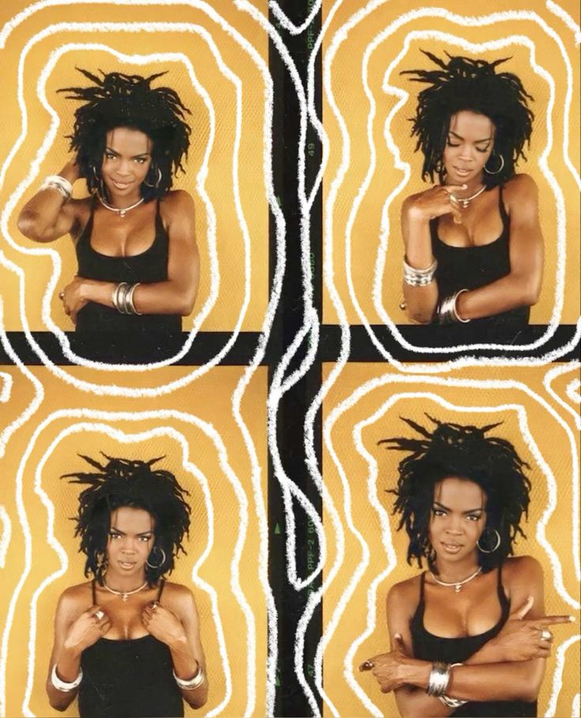
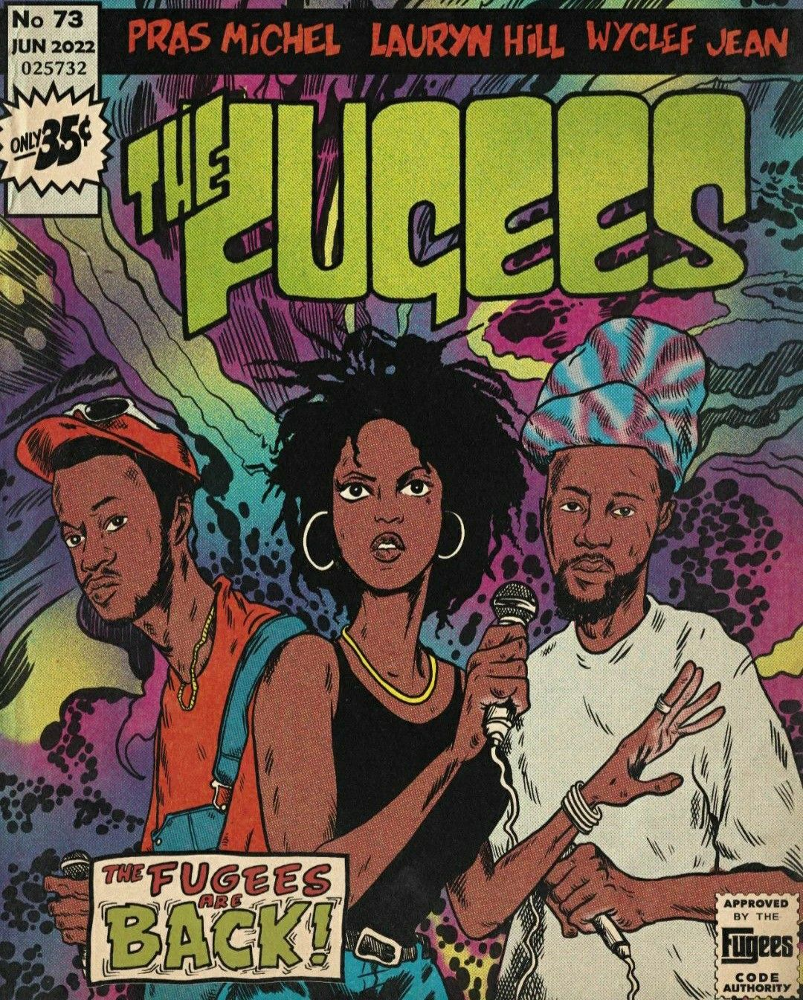
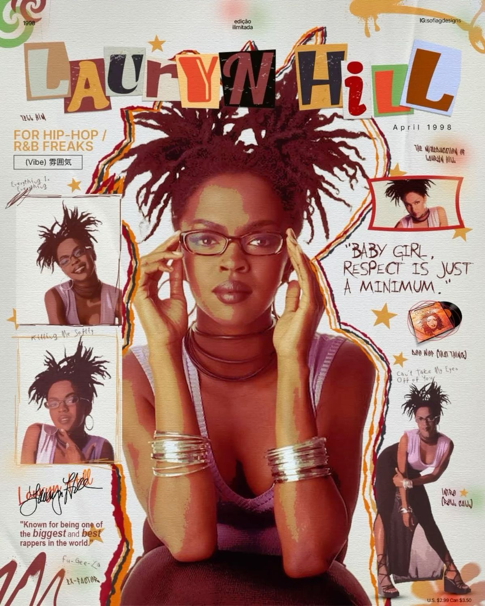

Fugees are an American hip-hop group formed in South Orange, New Jersey, in 1990. The trio of Wyclef Jean, Pras Michel, and Lauryn Hill became known for their fusion of hip-hop, reggae, R&B, and funk, socially conscious lyrics, and use of live instrumentation. The Fugees' second album, The Score (1996), peaked at No. 1 on the U.S. Billboard 200 and stayed in the top ten of that chart for over half a year. Singles from The Score included "Fu-Gee-La" and "Ready or Not", which highlighted Hill's singing and rapping abilities.

In 1998, Hill released her debut solo album, The Miseducation of Lauryn Hill. The album was a critical and commercial success, earning her five Grammy Awards, including Album of the Year. It featured hit singles such as "Doo Wop (That Thing)" and "Ex-Factor". The album's blend of hip-hop, soul, and R&B, along with its introspective lyrics, solidified Hill's status as a groundbreaking artist. However, after the success of her debut album, Hill faced legal and personal challenges that led to a hiatus from music. She released a live album in 2002 and a compilation of unreleased tracks in 2007, but has not released a full studio album since.